2025
-

Bringing Diversity from Diffusion Models to Semantic-Guided Face Asset Generation
Yunxuan Cai, Sitao Xiang, Zongjian Li, Haiwei Chen, Yajie Zhao
arXiv preprint:2504.15259, 2025
[Project Page] -

RDD: Robust Feature Detector and Descriptor using Deformable Transformer
Gonglin Chen, Tianwen Fu, Haiwei Chen, Wenbin Teng, Hanyuan Xiao, Yajie Zhao
CVPR 2025 New!We are the 4th place of Image Matching Challenges 2025 among 21,617 Submissions! -

SC-OmniGS: Self-Calibrating Omnidirectional Gaussian Splatting
Huajian Huang*, Yingshu Chen*, Longwei Li, Hui Cheng, Tristan Braud, Yajie Zhao, Sai-Kit Yeung
ICLR 2025
[Project Page] -
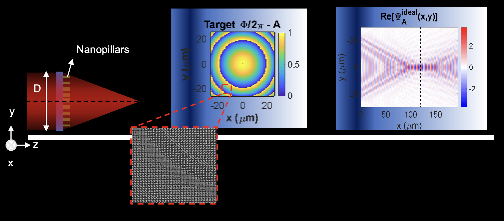
Bifocal polarization-sensitive metalens for rapid BRDF estimation
Pratusha Bhuvana Prasad, Omid Hemmatyar, Caoyi Zou, Yajie Zhao
SPIE 2025 -

SparseGS: Sparse View Synthesis using 3D Gaussian Splatting
Haolin Xiong, Sairisheek Muttukuru, Hanyuan Xiao, Rishi Upadhyay, Pradyumna Chari, Yajie Zhao, Achuta Kadambi
3DV 2025
-
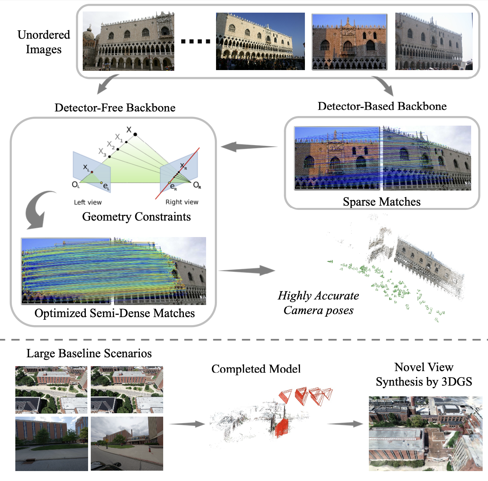
Geometry-Aware Feature Matching for Large-Scale Structure from Motion
Gonglin Chen, Jinsen Wu, Haiwei Chen, Wenbin Teng, Zhiyuan Gao, Andrew Feng, Rongjun Qin, Yajie Zhao
3DV 2025 (Oral) -
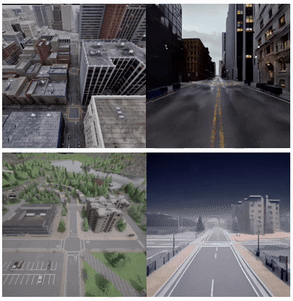
Skyeyes: Ground Roaming using Aerial View Images
Zhiyuan Gao*, Wenbin Teng*, Gonglin Chen, Jinsen Wu, Ningli Xu, Rongjun Qin, Andrew Feng, Yajie Zhao (* indicates equal contribution)
WACV 2025
[Project Page] -

Localized Gaussian Splatting Editing with Contextual Awareness
Hanyuan Xiao, Yingshu Chen, Huajian Huang, Haolin Xiong, Jing Yang, Pratusha Prasad, Yajie Zhao
WACV 2025
[Project Page]
2024
-
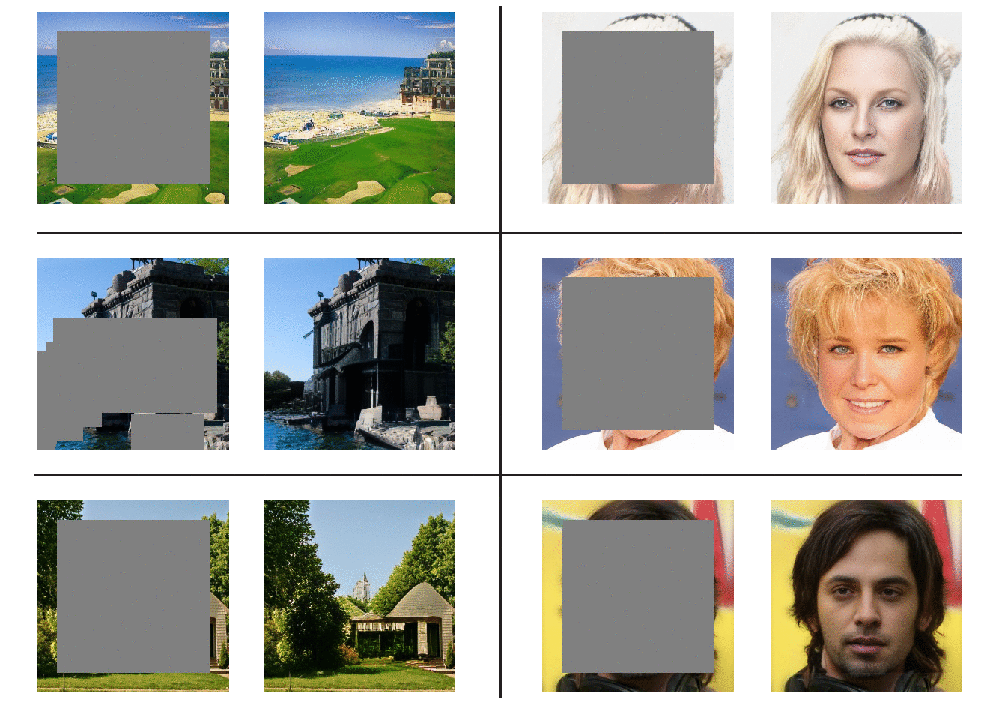
Don't Look into the Dark: Latent Codes for Pluralistic Image Inpainting
Haiwei Chen, Yajie Zhao
CVPR 2024
[Project Page]
2023
-

Editorial: Creating Lifelike Digital Humans
Fabien Danieau, Philippe Guillotel, Ludovic Hoyet, Steve Tonneau and Yajie Zhao
Frontiers in Virtual Reality, 2023 -
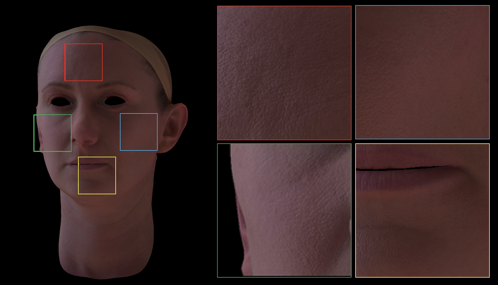
Light Sampling Field and BRDF Representation for Physically-based Neural Rendering
Jing Yang, Hanyuan Xiao, Wenbin Teng, Yunxuan Cai, Yajie Zhao
ICLR 2023
2022
-
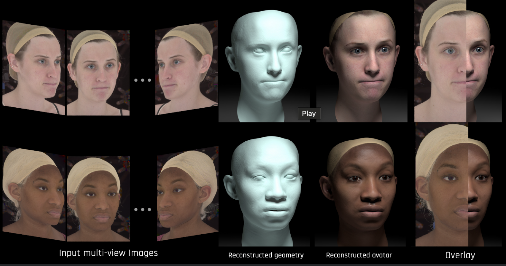
Rapid Face Asset Acquisition with Recurrent Feature Alignment
Shichen Liu, Yunxuan Cai, Haiwei Chen, Yichao Zhou, Yajie Zhao
Siggraph Aisa 2022
[Project Page] -


Exemplar-based Pattern Synthesis with Implicit Periodic Field Network
Haiwei Chen, Jiayi Liu, Weikai Chen, Shichen Liu, Yajie Zhao
CVPR 2022
[Project Page] -
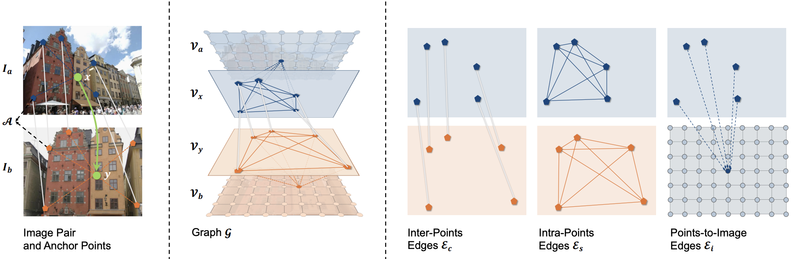
DenseGAP: Graph-Structured Dense Correspondence Learning with Anchor Points
Zhengfei Kuang, Jiaman Li, Mingming He, Tong Wang, Yajie Zhao
ICPR 2022 (Oral)
2021
-
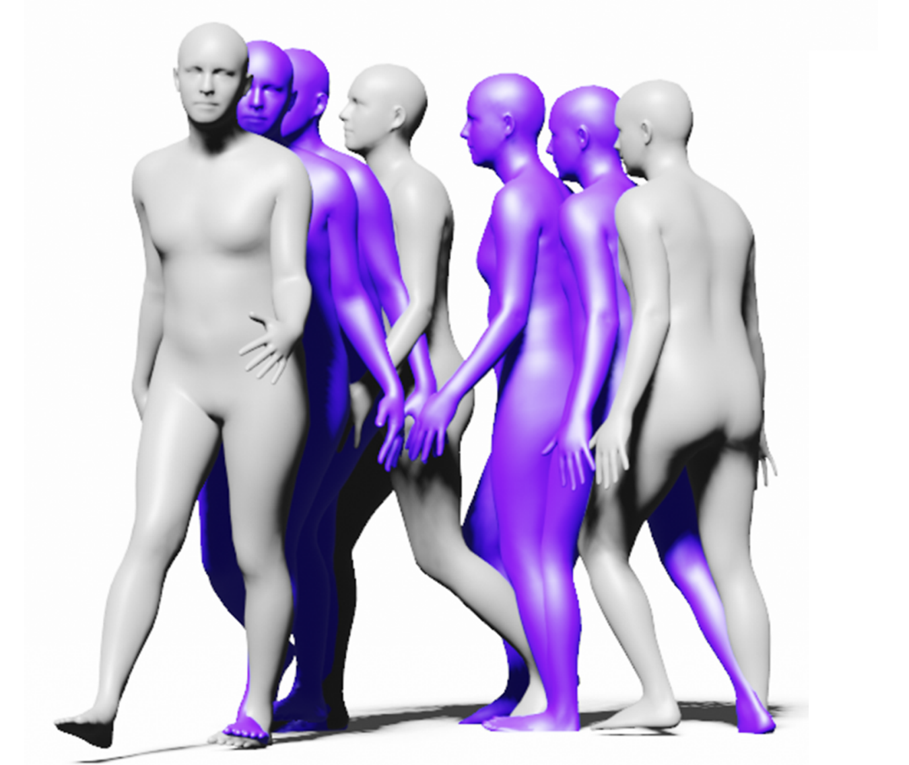
Task-Generic Hierarchical Human Motion Prior using VAEs
Jiaman Li, Ruben Villegas, Duygu Ceylan, Jimei Yang, Zhengfei Kuang, Hao Li, Yajie Zhao
3DV 2021
[Video] -
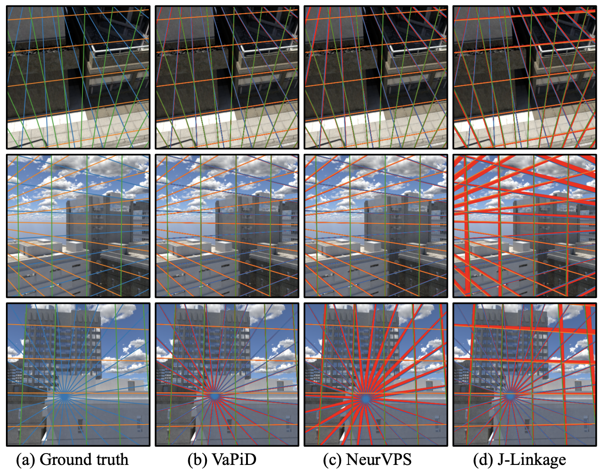
VaPiD: A Rapid Vanishing Point Detector via Learned Optimizers
Shichen Liu, Yichao Zhou, and Yajie Zhao
ICCV 2021 -
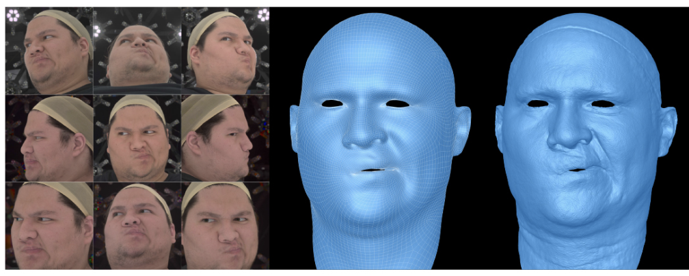
Topologically Consistent Multi-View Face Inference Using Volumetric Sampling
Tianye Li, Shichen Liu, Timo Bolkart, Jiayi Liu, Hao Li, Yajie Zhao
ICCV 2021 (Oral)
[Project Page] -
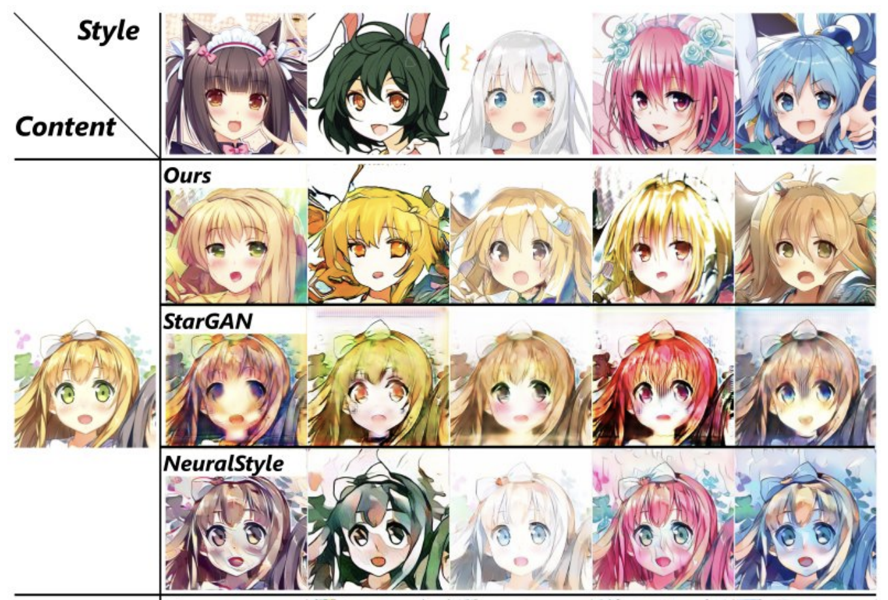
DisUnknown: Distilling Unknown Factors for Disentanglement Learning
Sitao Xiang, Yuming Gu, Pengda Xiang, Menglei Chai, Hao Li, Yajie Zhao, Mingming He
ICCV 2021
[Project Page]
2020
-
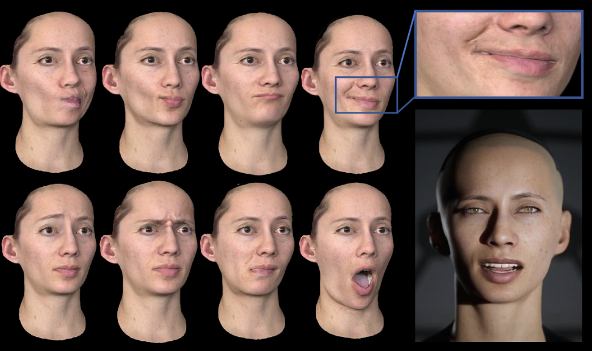
Dynamic Facial Asset and Rig Generation from a Single Scan
Jiaman Li, Zhengfei Kuang, Yajie Zhao*, Mingming He, Karl Bladin, Hao Li (* indicates Corresponding Author)
ACM Transactions on Graphics (TOG) 2020
[Project Page] -

Learning Formation of Physically-Based Face Attributes
Ruilong Li*, Karl Bladin*, Yajie Zhao*, Chinmay Chinara, Owen Ingraham, Pengda Xiang, Xinglei Ren, Pratusha Prasad, Bipin Kishore, Jun Xing, Hao Li (* indicates equal contribution)
CVPR 2020 [Video]
Selected Earlier Publications
-
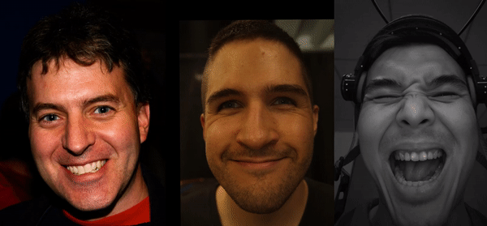
Learning Perspective Undistortion of Portraits
Yajie Zhao, Zeng Huang, Tianye Li, Weikai Chen, Chloe LeGendre, Xinglei Ren, Ari Shapiro, and Hao Li
ICCV 2019 (Oral) -

Mask-off: Synthesizing face images in the presence of head-mounted displays
Yajie Zhao, Qingguo Xu, Weikai Chen, Chao Du, Jun Xing, Xinyu Huang, Ruigang Yang
IEEEVR 2019 (Oral) -
Identity preserving face completion for large ocular region occlusion
Yajie Zhao, Weikai Chen, Jun Xing, Xiaoming Li, Zach Bessinger, Fuchang Liu, Wangmeng Zuo, Ruigang Yang
BMVC 2019 -

Deep Volumetric Video From Very Sparse Multi-View Performance Capture
Zeng Huang, Tianye Li, Weikai Chen, Yajie Zhao, Jun Xing, Chloe LeGendre, Linjie Luo, Chongyang Ma, and Hao Li
ECCV 2018